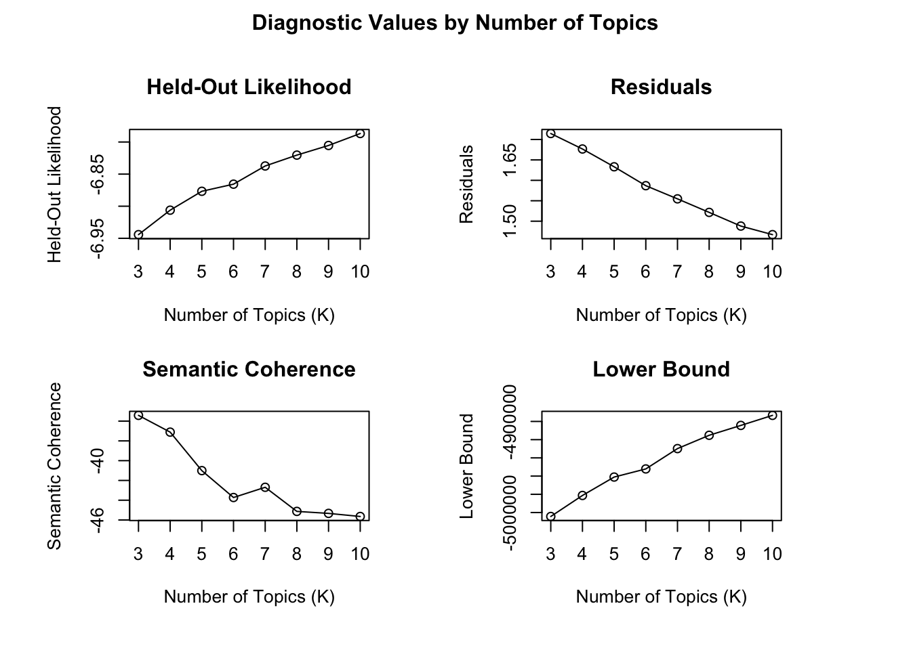
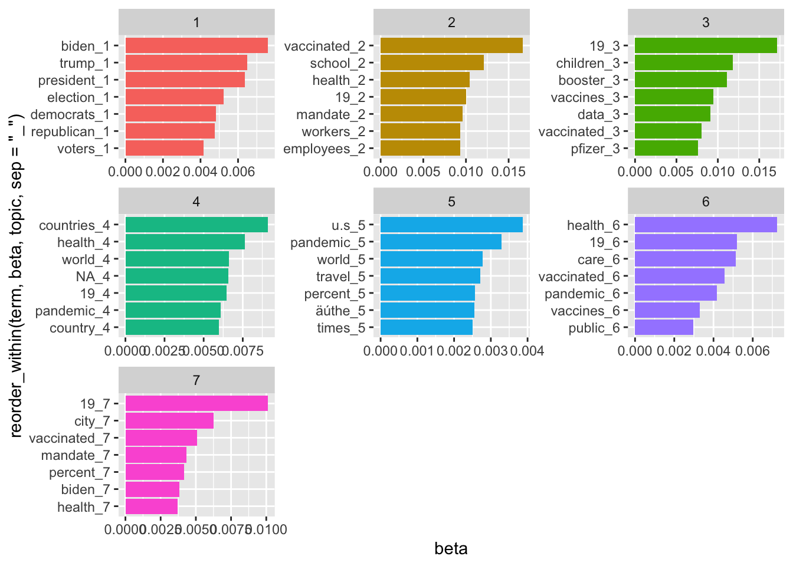
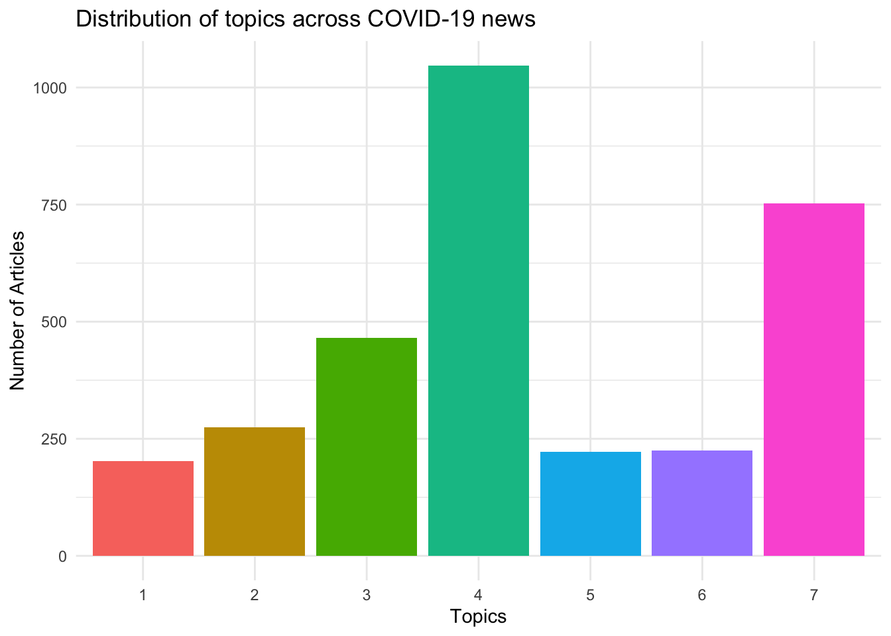

6. Topic modeling
Learning goals
By the end of this tutorial, you will be able to:
- Understand what topic modeling is and when it is useful for text analysis.
- Preprocess text data for topic modeling in R.
- Estimate a topic model using the stm package.
- Interpret and label topics based on model outputs.
Introduction to Topic Modeling
Topic modeling is a computational method used to discover latent themes in large collections of text. Instead of manually coding documents, topic modeling identifies clusters of words that frequently occur together. These clusters represent topics, which researchers must then interpret and label. For example, in a dataset about COVID-19 news coverage, topic modeling might reveal topics such as:
- vaccine mandates
- international travel
- public health measures
- misinformation
Importantly, topic modeling does not automatically assign meaning to topics. The model produces clusters of words, and researchers must interpret them based on context.
Two commonly used topic modeling approaches that we are going to cover here are:
- Structural Topic Modeling (STM)
- Latent Dirichlet Allocation (LDA)
STM allows researchers to incorporate metadata, while LDA is a more traditional probabilistic topic model.
Required Packages
This chapter uses several packages for text processing and topic modeling.
You only need to install packages once.
Importing data
For this example, we use a dataset retrieved from Media Cloud containing news coverage related to COVID-19. The dataset includes articles from four news outlets: CNN, New York Post, New York Times, Wall Street Journal.
STM topic modeling
Step 1: Text Pre-processing
Before estimating a topic model, text must be cleaned and standardized. Common preprocessing steps include: removing stopwords removing numbers removing punctuation converting text to lowercase The textProcessor() function in the stm package performs many of these steps automatically. Let’s use the ‘full_article’ column.
news_processed <- textProcessor(news_corpus$full_article,
metadata = news_corpus,
customstopwords = c("said", "don't", "will", "like", "use",
"can", "'re", "one", "get", "know",
"new", "told", "accord", "don’t", "’re",
"according", "show", "say", "people",
"report", "just", "want", "think", "now",
"make", "time", "come", "back", "say",
"see", "äî", "äôs", "also",
"read","vaccin", "covid-", "covid",
"vaccine", "vaccination", "äù",
"äôre", "COVID-19", "äô", "äôt"),
lowercase = TRUE,
striphtml = TRUE)Step 2: Prepare Documents for Modeling.
Next, we convert the processed text into the format required for STM. We use the function prepDocuments() to clean the data.
Removing 65247 of 67439 terms (186551 of 655969 tokens) due to frequency
Your corpus now has 2394 documents, 2192 terms and 469418 tokens.The argument lower.thresh = 50 means that any word appearing in fewer than 50 documents will be automatically excluded from the analysis. Removing these rare words helps make the dataset less sparse, which can improve the stability and interpretability of the topic model.
You can also use upper.thresh to set an upper limit, excluding words that appear too frequently across documents. Adjusting these thresholds allows researchers to control which terms are included in the analysis and refine the model based on predefined constraints.
- prepDocuments() cleans and filters the processed text data. Then we extract the cleaned components:
- out$documents → filtered document data
- out$vocab → updated vocabulary
- out$meta → corresponding metadata
Step 3 Choosing the number of topics
How many topics should be identified? Determining the optimal number of topics can be challenging and requires careful justification. One approach is to review existing research on similar topics or draw from relevant theoretical frameworks.
Additionally, you can use the searchK function to explore different topic models; however, the interpretation of the results ultimately depends on your analysis and judgment.
Constructing a K model begins with an initial value (in this case, 3) and then progressively compares each model to the next. For example, K = 3 is evaluated against K = 4, which is then compared to K = 5, continuing in this manner. Since this process involves multiple iterations, it can be computationally intensive and time-consuming. Keep this in mind before executing the next block of code.
Here, I am building a k model with 3 to 10 topics (You can adjust these numbers). Note that running this code may take some time.

See https://juliasilge.com/blog/evaluating-stm/ to interpret this result.
Step 4: Run STM topic modeling
The code estimates a Structural Topic Model using the stm() function. Each argument controls a specific aspect of the model.
K = 7specifies the number of topics to estimate.max.em.its = 50sets the maximum number of Expectation–Maximization (EM) iterations used to fit the model.data = out$metaincludes the metadata associated with the documents, which can later be used to examine how topics vary across document characteristics.init.type = "Spectral"specifies the initialization method used to start the model estimation. Spectral initialization is commonly recommended because it tends to produce stable results.seed = 100sets a random seed for reproducibility, ensuring that the model produces the same results each time it is run.
This code will also take some time to run.
Step 5 Examine topics
After estimating the topic model, we can examine the most important words associated with each topic. These words help researchers interpret the themes captured by the model. The labelTopics() function extracts the most representative terms for each topic. In this example, topics 1 through 7 are displayed.
Topic 1 Top Words:
Highest Prob: booster, vaccin, shot, dose, data, fda, author
FREX: booster, fda, pfizer, moderna, immun, johnson, drug
Lift: fdas, fda‚, jab, pfizer‚, inflamm, fda, booster
Score: jab, booster, fda, dose, pfizer, moderna, cdc
Topic 2 Top Words:
Highest Prob: mandat, worker, vaccin, citi, requir, employe, health
FREX: employe, religi, exempt, mandat, polic, worker, irv
Lift: nba, nypd, kyri, email, unpaid, blasio‚, irv
Score: email, mandat, employe, exempt, irv, religi, polic
Topic 3 Top Words:
Highest Prob: play, third, year, even, work, take, mani
FREX: third, play, feel, black, misinform, love, game
Lift: third, reader, husband, instagram, misinform, podcast, wife
Score: third, coach, star, game, misinform, player, feel
Topic 4 Top Words:
Highest Prob: compani, use, year, travel, busi, expect, billion
FREX: use, market, price, stock, industri, flight, billion
Lift: economist, index, stock, use, market, revenu, investor
Score: use, market, stock, airlin, compani, billion, price
Topic 5 Top Words:
Highest Prob: biden, presid, democrat, republican, state, elect, trump
FREX: trump, democrat, voter, republican, today, newsom, elect
Lift: ballot, gop, today, trump, voter, taliban, alli
Score: today, democrat, republican, voter, trump, newsom, elect
Topic 6 Top Words:
Highest Prob: countri, vaccin, case, death, health, million, hospit
FREX: death, countri, popul, toll, restrict, lockdown, region
Lift: coronavirus-born, toll, covax, brazil, tracker, africa, india
Score: coronavirus-born, death, hospit, africa, minist, toll, countri
Topic 7 Top Words:
Highest Prob: school, children, mask, vaccin, student, parent, test
FREX: school, student, parent, mask, kid, children, wear
Lift: los, classroom, student, parent, halloween, school, kid
Score: los, school, student, children, mask, kid, parent Visualize the prevalence of topics in the dataset:
Interpreting Topics: Once topics are estimated, the researcher must interpret them. Key questions include: - What words define each topic? - What theme connects these words? - Do the topics align with theoretical expectations?
Finding correlations
Using the topicCorr() function, you can identify correlations between topics. If a line appears between topics in the resulting network diagram, it indicates a correlation between them. This visualization helps reveal relationships and connections between different topics.

It seems these seven topics are not correlated (Yikes!)
Extracting thetas
In Structural Topic Modeling (STM), the scores used to assess the proportion of a document associated with a topic are referred to as “thetas.” It is used to determine which topic is most relevant to each document.
If you inspect theta_scores using View(theta_scores), you’ll notice that news_stm$theta is already formatted in a wide structure. To identify the topic with the highest theta value for each document, we need to convert it into a long format.
Extract top thetas
Here, we use by group_by() and treat the ‘doc_id’ column as an unique ID of each row. We use slice_max() to select the highest theta value per document
# A tibble: 1,749 × 3
# Groups: doc_id [1,748]
doc_id topic theta
<dbl> <chr> <dbl>
1 2 V6 0.735
2 5 V1 0.524
3 9 V5 0.524
4 12 V1 0.472
5 31 V6 0.563
6 33 V2 0.423
7 44 V4 0.697
8 45 V6 0.594
9 46 V2 0.592
10 48 V3 0.487
# ℹ 1,739 more rowsThis extracts the topic with the highest theta value for each document, showing which topic is most strongly associated with each document. For example, the row with doc_id 2 is most strongly associated with topic 6.
Assign topic to each document and create a new dataframe
You can use write.csv() to save it into a csv file.
LDA topic modeling
LDA is similar to STM topic modeling. For LDA, install two packages: topicmodels and ldatuning
Step 1: Pre-process your data
We are using the same dataset but I gave a different name for this dataframe to avoid confusion.
Rows: 3190 Columns: 4
── Column specification ────────────────────────────────────────────────────────
Delimiter: ","
chr (3): publish_date, media_name, full_article
dbl (1): doc_id
ℹ Use `spec()` to retrieve the full column specification for this data.
ℹ Specify the column types or set `show_col_types = FALSE` to quiet this message.Step 2: Add custom stopwords to the stop_words list in tidytext
final_stop <- data.frame(word = c("said", "don't", "will", "like",
"use", "can", "'re", "one", "get",
"know", "new", "told", "accord", "don’t",
"’re", "according", "show", "say", "people",
"report", "just", "want", "think", "now",
"make", "time", "come", "back", "say",
"see", "äî", "äôs", "also", "read","vaccin",
"covid-", "covid", "vaccine", "vaccination",
"äù", "äôre", "COVID-19", "äô", "äôt"),
lexicon = "custom") %>%
rbind(stop_words)Step 3: Use cast_dtm() function and create document-term matric (DTM) to prepare the document
The code performs several steps in sequence:
unnest_tokens(word, full_article)tokenizes each article into individual words.anti_join(final_stop, by = "word")removes stopwords from the dataset.count(doc_id, word)counts how many times each word appears in each document.cast_dtm(doc_id, word, n)converts the tidy text format into a Document–Term Matrix.
<<DocumentTermMatrix (documents: 2486, terms: 67520)>>
Non-/sparse entries: 517049/167337671
Sparsity : 100%
Maximal term length: NA
Weighting : term frequency (tf)You can use the LDA() function from the topicmodels package to perform LDA topic modeling. In this example, we will classify the dataset into seven topics (k = 7).
The LDA algorithm offers two fitting methods: VEM (Variational Expectation-Maximization) and Gibbs sampling. Selecting a different method may lead to slight variations in the results. For more about key differences, see: https://www.quora.com/Could-latent-Dirichlet-allocation-solved-by-Gibbs-sampling-versus-variational-EM-yield-different-results
Each word in a topic is assigned a beta value, which represents its significance within that topic. A higher beta score indicates that the word is more strongly associated with the topic. In other words, when a document contains that word, it is more likely to be classified into the corresponding topic cluster.
Step 4: Run LDA
Note: It may take some time to run this code.
A LDA_VEM topic model with 7 topics.Extract beta
Based on the beta values that you extracted, identify and visualize the most important words for each topic in an LDA model (which indicate the probability of a word belonging to a given topic).
Step 5: Identify and visualize the most important words based on beta values
Focus on top 7 topics in each topic:
Visualize your topics

You can also extract the topic probabilities for each document in an LDA (Latent Dirichlet Allocation) model and converts the data from a long format to a wide format for easier analysis.
Gamma values represent the probability of each document belonging to a given topic.
Use gamma values
pivot_wider() your data frame
Assign a topic to each document
toptopics <- topics_doc %>%
group_by(document) %>%
# Subset the rows with the largest gamma (per document)
slice_max(gamma)
colnames(toptopics)[1] <- "doc_id"
colnames(toptopics)[2] <- "topics"
toptopics$doc_id <- as.numeric(toptopics$doc_id)
news_corpus1 <- full_join(news_corpus0, toptopics, by = "doc_id")Plot the distribution of topics across articles
news_corpus1 %>%
# removes rows where the topic value is missing
filter(!is.na(topics)) %>%
count(topics) %>%
mutate(topics = factor(topics, levels = 1:7)) %>%
ggplot(aes(x = topics, y = n, fill = topics)) +
geom_bar(stat = "identity", show.legend = FALSE) +
labs(title = "Distribution of topics across COVID-19 news",
x = "Topics",
y = "Number of Articles") +
theme_minimal()
Finding the k
You can use the ldatuning package and use FindTopicsNumber() function to find your k (number of topics). Ultimately, it is up to you to determine the optimal K based on these results. The plot presents various metrics, and their interpretation may vary depending on individual research approaches and methodologies.
Seeded Latent Dirichlet Allocation (Seeded LDA) is a semi-supervised topic modeling approach that allows researchers to guide topic discovery using predefined seed words.
In standard LDA, topics are identified solely from patterns in word co-occurrence within the data. In contrast, Seeded LDA incorporates prior knowledge by allowing researchers to specify keywords that represent expected themes. These seed words influence how topics are constructed while the model continues to learn additional related terms from the corpus.
This approach can produce topics that are more interpretable and theoretically grounded, especially when researchers already have expectations about the main themes in a dataset.
When to Use Seeded LDA
Seeded LDA is particularly useful when:
- researchers have clear theoretical categories
- specific keywords define expected themes
- purely unsupervised topic models produce ambiguous topics
Further Resources
If you would like to explore this method further, the following resources provide detailed tutorials and applications:
Package tutorial:
https://koheiw.github.io/seededlda/articles/pkgdown/seeded.htmlExample application in social media research:
Koo, G. H., & Chen, B. (2024). It’s not just “8 dead”: Examining news and Twitter’s social construction of the Atlanta spa shootings through the lens of networked gatekeeping and affective publics. Social Media + Society, 10(3). https://doi.org/10.1177/20563051241269278
Summary
In this chapter, you learned how to: - preprocess textual data for topic modeling - estimate a Structural Topic Model (STM) in R - examine the most important words within topics - determine the appropriate number of topics - interpret and label topics based on model outputs
Topic modeling is a powerful tool for analyzing large collections of text. Rather than reading thousands of documents manually, researchers can use algorithms to identify patterns in word usage. However, they require careful interpretation. The final step—assigning meaning to topics—remains a substantive research decision made by the researcher.